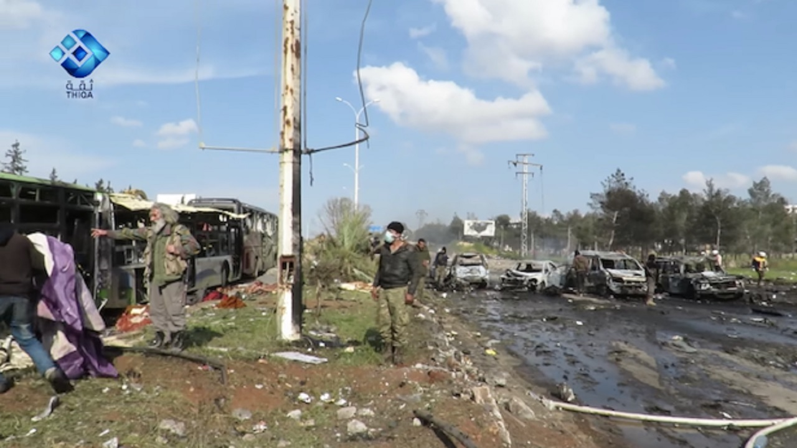
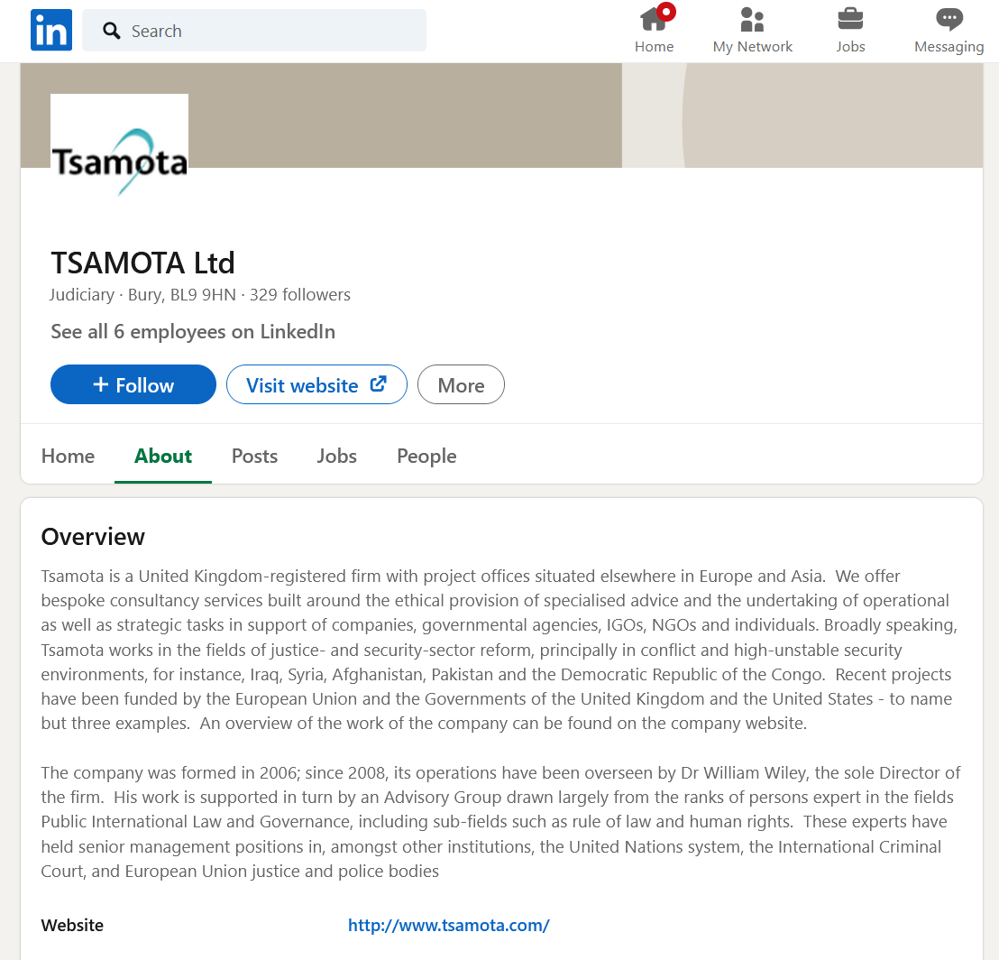

Western govt contractor entrapped British scholar in sting operation to cover up Syria corruption scandal
A British academic who belongs to a prominent anti-war research group has been targeted in a deceptive sting operation run by a regime-change organization funded with UK and US taxpayer money.That contractor now stands accused of defrauding the European Union of millions of dollars.
The Working Group on Syria, Propaganda, and Media is a UK-based collective of professors who have published scholarly investigations exposing the disinformation and lies that have been at the heart of the decade-long Western dirty war on Damascus.
The working group’s success in debunking this propaganda, and in amplifying whistleblowers from the Organization for the Prohibition of Chemical Weapons (OPCW), has made it a target of pro-war elements in Western governments and intelligence agencies, along with their allies in major corporate media outlets.
This March, it was revealed that the Commission for International Justice and Accountability (CIJA), a regime-change organization that has been funded by numerous Western governments and is linked to UK intelligence agencies, had run an elaborate sting operation in a bid to discredit an academic member, and the working group as a whole.
A representative of CIJA posed as a Russian under a fake name and deceived a British researcher named Paul McKeigue into feeding it information with the goal of ensnaring him, vilifying his research group, and smearing its participants as tools of the Kremlin.
In other words, the anti-war British scholar was entrapped by an organization supported by his own government, and that happens to have been accused of large-scale fraud by the EU’s own fraud regulator.
The European Anti-Fraud Office (OLAF) has formally accused CIJA of fraud, 'submission of false documents, irregular invoicing, and profiteering,' and recommended that authorities in the UK, the Netherlands, and Belgium prosecute the EU-funded organization.
Faced with potential consequences over these serious EU allegations of corruption, CIJA appears desperate to discredit anyone that reports on its unsavory activities.So the regime-change group contrived a months-long confidence trick of questionable legality and morality.And Western media outlets have eagerly spread its narrative in a closely coordinated cover-up operation aimed at burying the well-substantiated charges of fraud.
The group behind the sting operation, the Commission for International Justice and Accountability, has a history of unethical behavior.The Grayzone previously published an investigation documenting CIJA’s suspicious tactics, extensive links to Western governments, and direct collaboration with Syria’s al-Qaeda affiliate.
CIJA’s executive director and founder, William Wiley, also directs a company called Tsamota, and the two firms share the same legal address.Wiley has used Tsamota to cash in on conflicts that advance Western foreign policy interests, raking in millions in government contracts, while advising Canadian mining companies on how to avoid prosecution for their activities in Africa.
Leaked documents show that Wiley’s Tsamota is closely linked to other Western intelligence cut-outs and government contractors such as ARK, which was at the center of an enormous global disinformation campaign aimed at orchestrating regime change in Syria.In fact Tsamota and ARK collaborated in jointly launching the Syrian Commission for Justice and Accountability, which in 2014 changed its name to CIJA.

Having since 2013 received an estimated €42 million (nearly $50 million USD) in funding from the EU, Britain, United States, Germany, Canada, Netherlands, Denmark, and Norway – states that have waged war on Syria and supported the country’s Islamist opposition – CIJA has become the key instrument of legal warfare, or lawfare, targeting Damascus and the government of Bashar al-Assad.
The United States and its European allies spent billions arming and training militants, many from extremist Salafi-jihadist groups, to try to overthrow the Syrian government and Assad, as NATO did in Libya in 2011.But in their ruthless crusade to bring about regime change in Syria, these Western nations supplemented their military efforts with other forms of unconventional and hybrid warfare, including suffocating economic sanctions and lawfare.
CIJA was created in 2012, at the beginning of the dirty war, as a weapon of what these Western governments call 'transitional justice,' or regime-change-by-court.(The doctrine has also been dubbed the 'Responsibility to Prosecute,' based on the 'Responsibility to Protect' concept that was employed by liberal interventionists to justify the NATO wars that destroyed the states of Libya and Yugoslavia.)
The commission’s investigators have collaborated with al-Qaeda and other Salafi-jihadist armed opposition groups in order to steal documents from Syria and use them in Western lawsuits against Assad and his government.
CIJA’s collaboration with al-Qaeda was acknowledged in passing in an otherwise fawning publicity piece in The Guardian before it was quickly flushed down the memory hole, never to be mentioned again by the very same mainstream corporate media outlets that have printed puff piece after puff piece heroizing the organization.
The European Union awarded the Commission for International Justice and Accountability a massive €1.5 million (approximately $1.77 million USD) grant in 2016 in order to gather 'evidential material of potential war crimes and crimes against humanity' and prepare 'new criminal case files' against the Syrian government and ISIS.The funding was meant to be used between 2016 and 2020.
But Brussels has clearly not been happy with the work that CIJA did, or rather did not do, because the EU’s own fraud regulator announced when the project ended that the organization had been under investigation for fraud.
The European Anti-Fraud Office (OLAF) published a press release in March 2020 stating that it had conducted a 'long and complicated investigation' that 'revealed that while the partnership claimed to be supporting the rule of law, the partners [CIJA] were actually committing widespread violations themselves, including submission of false documents, irregular invoicing, and profiteering.'
OLAF recommended 'that the national authorities in the UK, the Netherlands and Belgium consider prosecuting the involved project partners [CIJA] for possible offences of fraud and forgery.'
CIJA was not publicly named in the press release, but OLAF’s statement made it clear that the fraud charges concerned its 'partners in Rule of Law project in Syria,' specifically an organization that 'had entered into a contract with the EU to support possible prosecutions for violations of International Criminal and Humanitarian Law in Syria' — an obvious reference to CIJA.
The OLAF statement added that CIJA had been given €1,999,830 (roughly $2.36 million USD) as part of its Syria contract, even higher than the amount disclosed in 2016.(The figures and timeline on other EU disclosures also slightly vary, and the BBC later reported that the fraud allegations concerned a €3 million contract that the EU awarded CIJA in 2013.)OLAF suggested that the European Commission should recover €1,896,734 (nearly $2.24 million USD), or 95 percent, of that amount.
While the European Anti-Fraud Office did not explicitly name CIJA, a Dutch-language investigation by journalist Arjen van der Ziel, published in the major Dutch newspaper Trouw, later made it clear that CIJA was the organization being accused of fraud.
The UAE’s newspaper The National followed up with an article on OLAF’s investigation of CIJA’s corruption, titled 'Fraud allegations taint efforts to prosecute war crimes in Syria.'
Back in 2014, the US State Department, which had given $1 million to CIJA over two years, announced that it was cancelling its annual funding for the group.Washington did not given a reason for the cut, so it is not clear if fears of corruption had also motivated this decision.
Despite the millions of dollars the Commission for International Justice and Accountability received from Western governments, it has very little to show for itself.
Over a period of years, al-Qaeda and other Salafi-jihadist militias have helped CIJA steal huge sums of documents from Syria in a massive operation aimed at prosecuting the government of Bashar al-Assad.But that effort has culminated in just a single high-profile case, which is full of gaping legal holes.
In 2020, the German government used materials obtained by CIJA to arrest two former Syrian government officials whom it accused of war crimes.Both had voluntarily left Syria years before and were living in Germany.
In fact one of the men being charged in Germany, a 58-year-old former prison intelligence officer accused of torture named Anwar Raslan, had worked closely with the Syrian opposition when he defected from the government back in 2013.Raslan later established himself as a prominent member of the Western-backed opposition to Assad.
A 2020 profile in Foreign Policy, titled 'If a Torturer Switches Sides, Does He Deserve Mercy?,' noted: 'Raslan ingratiated himself with several opposition leaders and in 2014 even got a ticket to represent the rebellion in Geneva at U.N.-organized peace talks.The about-face paid off when he flew to Germany in the summer that year and sought asylum.'
Members of the Syrian opposition are split over how to prosecute leading Syrian government torturer and defector Anwar Raslan, Anchal Vohra writes.https://t.co/Z5v5BeyeDa — Foreign Policy (@ForeignPolicy) April 22, 2020
That is to say, after being given several years, nearly $50 million of dollars in Western government contracts, and help from extremist Salafi-jihadist insurgents, this is apparently the best CIJA could come up with: a Syrian living in Germany who had supported the anti-Assad opposition.
As the commission comes under increasing scrutiny, and with the EU’s fraud regulator breathing down its neck, it enacted a desperate con-job to discredit its critics.
The Commission for International Justice and Accountability has enjoyed obsequious praise from across the Western press.One of the only organizations that has criticized the Western government-funded group and its dubious methodology was the Working Group on Syria, Propaganda, and Media.
So in 2020, CIJA took its characteristically deceitful tactics to the next level, in a quest to discredit the working group and smear its academic constituents.
In February, the working group sent CIJA a list of questions for its executive director, William H.Wiley, notifying him and his organization that their shady business dealings were being investigated.(The working group has since made these questions public, and has also published its lengthy investigation into CIJA.)
As the working group dug for information on Wiley, it was surprised to find that the CIJA leader had been listed as the head of nine different companies in four jurisdictions.
They even discovered that Wiley and his firm Tsamota – a contractor for the European Union and US and UK governments that has done work in Iraq, Syria, Afghanistan, Pakistan, and Congo – had suspiciously been named in the Panama Papers, a database of offshore entities.
Moreover, the researchers uncovered that CIJA and Tsamota had the same legal address listed, along with overlap in key personnel.The address that Wiley’s CIJA and Tsamota had registered in Brussels, Belgium was apparently just an apartment in a residential area.(In late 2015, Wiley moved the CIJA/Tsamota address to Lisbon, Portugal.)
When CIJA and Wiley saw the questions from the working group, they were apparently frightened to see that their alleged financial improprieties might come to light.(The European Anti-Fraud Office’s press release revealing its corruption investigation into CIJA was not released until March, a month later.)
So CIJA embarked on an attempt to entrap the Working Group on Syria, Propaganda, and Media, in a bid to discredit its research.
An unidentified CIJA staffer created a false account on the encrypted email platform ProtonMail and, in December 2020, contacted Paul McKeigue, a professor of genetic epidemiology and statistical genetics at the University of Edinburgh, and a member of the working group.
McKeigue told The Grayzone that when the fake account first emailed him, it did not identify itself.The user, a CIJA employee in disguise, tried to entice McKeigue by promising useful information on Syria that he could use for his research.
McKeigue said he was skeptical at first, but the account ultimately provided him with factual intelligence that only an insider could have had.McKeigue independently verified the information and saw that it was indeed correct.
'They are professionals at information warfare,' McKeigue recalled.'They know how to trick you into believing them and gaining their trust.'
The Grayzone has reviewed some of the emails sent between McKeigue and the CIJA staffer.The messages show how over several months of communication, CIJA deceived McKeigue into feeding it private information about his colleagues in the working group and about other public figures who have exposed lies and disinformation used to justify the Western dirty war on Syria.
McKeigue stressed however that not all of the information he provided in the sting operation was accurate.'Some of this was embellished to give the impression of a coordinated network that in reality does not exist,' McKeigue said in a public statement, noting that the working group 'does not exist as an entity other than a loose group of people who occasionally co-author articles or comment on each other’s drafts.'
It was not until weeks into their correspondence, McKeigue recounted, that the account began hinting that it was supposedly run by a Russian intelligence officer.McKeigue stressed that the user had at first remained anonymous for weeks, and did not falsely claim a Russian identity until well into their private communications.
Eventually, the account turned to a fake name: Ivan.The CIJA staffer behind it blatantly lied to McKeigue, creating an entirely new, fictitious persona.
'Ivan' tricked McKeigue into believing that he had a source on the inside, maybe even a whistleblower, who wanted to expose CIJA for apparent connections to Western intelligence agencies.
'When I first started looking at CIJA, I thought it was all an intelligence front and was doing its work to lay the basis for a US occupation and sanctions on Syria,' McKeigue told The Grayzone.'But as I dug further, I realized that, for all of the millions in funding that Western governments had provided it, CIJA had actually delivered very little.'
'Ivan' tried to convince McKeigue not to focus on investigating the corruption angle, but rather to focus on links to Western intelligence.The account even told McKeigue that the executive director of CIJA, William Wiley, was a CIA agent who had a long history working with the US government.
This led McKeigue to investigate Wiley’s extensive links to Washington and other Western governments, and his role in the trial against Iraq’s former leader Saddam Hussein and international tribunal for former Yugoslavia.
McKeigue, who said that he now believes that Wiley was the one running the false 'Ivan' account, found a book by journalist John Nixon, 'Debriefing the President: The Interrogation of Saddam Hussein,' which referred to a CIA analyst in Iraq named Bill, whom McKeigue suspected was William Wiley.
But 'Ivan' had distracted McKeigue from the main scandal: The EU regulator’s serious charges that Wiley had presided over a massive case of fraud.
'I realized that the case was mostly about corruption,' McKeigue told The Grayzone.
'I was stupid, but I was extremely busy at the time,' he added.'If I hadn’t been so busy, I would have been more careful.'
This scandal came to light on March 26, with a series of articles in the British media.
The BBC’s avowedly pro-war reporter Chloe Hadjimatheou – who was exposed for her own unethical, propagandistic work on Syria by The Grayzone’s Aaron Maté – promoted CIJA’s sting operation in an article titled 'The UK professor and the fake Russian agent.'Hadjimatheou uncritically echoed CIJA’s talking points, demonizing Paul McKeigue as a Kremlin shill and even defending the organization against the EU fraud regulator’s corruption charges.
Leaked documents reviewed by The Grayzone exposed how the BBC has infiltrated Russian language media to advance NATO interests in a covert program funded and overseen by the UK Foreign Office.
The Times, a British outlet known for amplifying the narratives of the UK’s intelligence services, ran a carefully coordinated piece attacking McKeigue.Just a few hours later, the same newspaper printed another smear accusing McKeigue and his colleagues at the Working Group on Syria, Propaganda, and Media of 'peddling Syria war ‘conspiracies.''The article uncritically regurgitated the claims of Charles Lister, a DC regime-change lobbyist employed by militaristic think tanks funded by the Gulf monarchies waging war on Damascus.
These media attacks were followed by a nearly identical smear piece in the right-wing tabloid the Daily Mail, which conveniently failed to mention OLAF’s fraud investigation into CIJA.
Amid the coordinated media assault, CIJA released a statement maligning the working group and defending its own dishonest tactics, insisting that its sting operation was 'undertaken by lawful means.'
For his part, Paul McKeigue published a personal statement on the working group website.'As a citizen investigator, I cultivate contacts with all sorts of people who have relevant information, including anonymous sources and some identified sources whose activities I do not endorse,' he wrote.'I kept an open mind about who I was talking to.'
The working group has since released its investigation into CIJA and Wiley’s suspicious business dealings.
McKeigue emphasized that he is deeply troubled by 'the subversion of British parliamentary government by what I now recognize to be a ‘deep state’ operating partly through private cutouts.'
Indeed, a UK government contractor with close proximity to intelligence services engaging in a spy-like sting operation against a British anti-war academic in an attempt to discredit his research, stain the reputation of his colleagues, and cover up well-substantiated charges of corruption should be a major scandal.
The desperation of the tactics shows CIJA and William Wiley have a lot to hide.A truly independent media would shine light on this controversy.But so far, the mainstream press has functioned as the public relations arm for the corruption-stained CIJA, papering over the ethical rot and corruption of a taxpayer-funded organization in a bid to further the dirty war on Syria.
Posted On: 2021-03-27T00:00:00
Posted By: Ben Norton



Content Date: 2021-03-27
Download Date: 2021-05-07
Document ID: L0C04AX0U